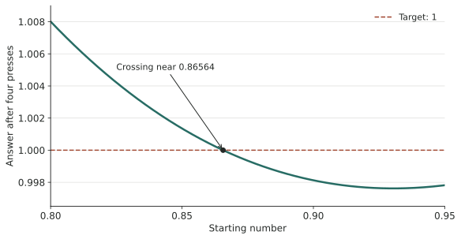

Imagine a calculator with one operation and one starting number. You can copy that number, combine copies, and feed the answers back into the same operation. You can keep going for as long as you like, but a finished recipe must have a last step. How much can this calculator build?
Suppose the starting number is 2. You can use two copies of 2 for your first calculation. Once you have an answer, you can save it and use it again. But you cannot type in a helpful 0 or 1 whenever you like. You have to make it using what you already have.
This is the question behind my paper, Positive Seeds, Exactness, and Certificates for Operation Search. A very small collection of tools can sometimes build far more than we expect. To understand how much, we need to distinguish an exact answer from a close approximation.

Part 1 of 9
Try the calculator
The button’s rule uses a number called e, approximately 2.718, and the natural logarithm, written ln. Raising e to a power and taking a natural logarithm undo each other: e to the power 2 is about 7.389, and the logarithm of that exact result is 2.
Picture it“e to the power” sends every number to a positive number. ln follows the same arrows back.
The button raises e to the power of the left input, then subtracts the logarithm of the right input. If a is the left input and b is the right one, we can write the rule as:
Try 2 in both boxes. The answer is about 6.696. Then keep 2 on the left and use the new answer on the right.
Try it
Your notebook and the button
First press: left input 2, right input 2, answer approximately 6.695909. Enable JavaScript to choose saved answers and build a longer recipe.
Start with 2 in both boxes.
Notebook Tap a saved number to put it in the highlighted box.
This is a rounded numerical preview. The symbol ≈ means “approximately.” Each saved entry records its two inputs. A display of 1 would not establish an exact mathematical answer; very large or unstable calculations may exceed this preview’s limits.
The right input must be positive: this calculator does not allow the logarithm of zero or a negative number. Every press must obey that rule, including presses inside a long recipe. A zero or negative starting number would leave us unable to make the first press.
Part 2 of 9
Why try to make 1?
Making 1 would give us a way to remove the logarithm from the button’s rule. The logarithm of 1 is zero, so putting 1 in the right box leaves just the exponential:
With that available, a short recipe recovers the logarithm too. Longer recipes give addition, subtraction, multiplication and division, with division by zero still forbidden. Each recipe uses only the original button.
Two recipes that use 1One press makes the exponential. Three presses make the logarithm.
Exponential · one press
Logarithm · three presses
How the button recovers a logarithm
Start with a positive number u and an available 1. Calculate F(1, u), which gives e − ln(u). Raise e to that answer using the rule above. Finally, put 1 in the left box and this new answer in the right box.
The final logarithm undoes the exponentiation. The result is e − (e − ln(u)), which equals ln(u). Every right input was positive.
What 1 unlocksWith an exact 1, each familiar operation has a recipe made only of presses.
- Exponential1 press
- Logarithm of a positive number3 presses
- Addition9 presses
- Subtraction9 presses
- Division by a positive number14 presses
- Multiplication57 presses
The paper gives an explicit multiplication recipe with 57 written applications of the button’s rule. That is a construction we know works, without claiming it is the shortest.
The link also runs the other way. With exact subtraction, any number minus itself gives 0, and e to the power 0 is 1. So a starting number gives exact arithmetic precisely when it can make exactly 1.
But all these arithmetic recipes assume we have 1 available. Our notebook still starts with 2.
Part 3 of 9
A recipe that approaches 1
There is a useful way to begin from any positive starting number. Put it in both boxes and press once. The paper proves that the answer is always above 2. Save it, then repeatedly apply the four-press recipe below.
We will count three things:
- Press
- Applies the button’s rule once.
- Round
- Follows the four-press recipe, using saved answers.
- Written instruction
- One appearance of the button’s rule in a recipe. Referring to a saved answer adds no instruction.
One roundFour presses. The current answer, B, fills five of the eight boxes.
- Press 1leftBrightBsave asU
- Press 2leftUrightBsave asV
- Press 3leftBrightVsave asW
- Press 4leftWrightBsave asNext
For the next round, “Next” becomes the new B.
Starting with 2 and making the preliminary press gives about 6.696. Step through the rounds from there and watch the gap between each answer and 1.
Watch it approach 1Each round lands closer to 1. Each round still lands above it.

All nine rounds as a table
| Round | Saved answer | Gap above 1 |
|---|---|---|
| 0 | 6.695908918 | 5.695908918 |
| 1 | 4.794412188 | 3.794412188 |
| 2 | 3.226961075 | 2.226961075 |
| 3 | 2.055420225 | 1.055420225 |
| 4 | 1.336175266 | 0.336175266 |
| 5 | 1.057987751 | 0.057987751 |
| 6 | 1.005170727 | 0.005170727 |
| 7 | 1.000352481 | 0.000352481 |
| 8 | 1.000023312 | 0.000023312 |
This recipe gets closer to 1 without ever reaching it in finitely many rounds. The proof establishes both parts: every round stays above 1, and for any positive gap we choose, enough rounds make the remaining gap smaller. A different recipe might still make exactly 1.
Part 4 of 9
Saving answers changes the size of the recipe
Look again at the five places where B enters the recipe. If B stands for a calculation, we could copy that whole calculation into all five places. Or we could calculate B once and save it in our notebook.
For the first round, B is the preliminary calculation using 2 and 2. Copying it five times gives five preliminary instructions plus the four instructions in the round: nine altogether. Saving B once needs only five.
Copy or saveThe same round, written down two ways.
Copy it out: 9 instructions
Save it once: 5 instructions
On each later round, copying multiplies the previous instruction count by five and adds four. Saving answers adds just four.
Watch the recipe growCopying multiplies the instructions by five each round. Saving adds four.
Save answers25
Copy it out31,249

Every round through eight as a table
| Round | Copied out | Saved answers |
|---|---|---|
| 0 | 1 | 1 |
| 1 | 9 | 5 |
| 2 | 49 | 9 |
| 3 | 249 | 13 |
| 4 | 1,249 | 17 |
| 5 | 6,249 | 21 |
| 6 | 31,249 | 25 |
| 7 | 156,249 | 29 |
| 8 | 781,249 | 33 |
The notebook makes the description much smaller. It cannot keep the numbers themselves small: even a short recipe may produce enormous intermediate answers. In the first round from 2, the second press already asks for e raised to about 807.19, a number with 351 digits. Ordinary computer arithmetic stops near 10308, so the convergence figures use an equivalent formula from the paper that is easier to evaluate accurately.
Read the two figures together and another pattern appears. Once the answer is near 1, each four-press round makes the gap about fifteen times smaller, gaining roughly 1.18 decimal digits of accuracy. With saved answers, the instruction count grows in proportion to that accuracy. Copying everything out makes the description grow exponentially. The same calculation becomes much more expensive to write down merely because we stop naming answers we already have.
The relation between accuracy and recipe size
Let εn be the gap above 1 after round n, and let dn = −log10(εn). This measures decimal accuracy: d = 6 means a gap of one millionth. The paper’s derivative calculation gives εn+1/εn → e−e, so each late round gains e/ln(10) ≈ 1.1805 digits.
Copied instructions: 2 · 5n − 1Both descriptions have exactly the same gap εn.
Combining these formulas gives saved size proportional to dn and copied size with exponential growth rate about 3.91dn. More precisely, ln(copied size)/dn tends to ln(5)ln(10)/e. Rounds are discrete; this is an asymptotic rate, not an exact multiplier for each extra digit. These statements concern this particular recipe’s description, not its running time or the shortest possible way to reach that accuracy.
Part 5 of 9
From almost 1 to almost any number
Approaching 1 is enough to recover a great deal of arithmetic approximately. With an exact 1, the recipes can make fractions such as 7 divided by 3. Replacing 1 with a sufficiently close approximation keeps the final answer close to that fraction. There are only finitely many presses to protect, so the replacement can also be made accurate enough to keep every logarithm legal.
Fractions can approach every number on the number line, including numbers such as the square root of 2. For that example, 1.4, 1.41 and 1.414 give successively better approximations. Choose a fraction near the target, then make a calculator answer near that fraction.
The argument in three stepsNear 1 leads to near any fraction, and fractions lead to near any number.
- 1Get near 1Run the four-press recipe for enough rounds.1.000023…
- 2Get near any fractionTake a recipe that makes, say, 7 ÷ 3 from an exact 1. Feed it the near-1 answer instead.close to 2.333…
- 3Get near any numberFirst pick a fraction close to the target.1.4, 1.41, 1.414 … √2
The resulting theorem is broad: from any positive starting number, a finite valid recipe can get within any chosen positive error of any real target. “Real” means a number on the number line. The recipe may depend on the target and the allowed error.
We can describe this using an interval, a stretch of the number line between two endpoints. Every interval, however narrow, contains an answer the calculator can make. Mathematicians call a set with this property dense.
A numerical search from 2As the search goes deeper, its computed values fill more of the picture.
Up to 1 press2 computed values in view
Up to 2 presses3 computed values in view
Up to 3 presses6 computed values in view
Up to 4 presses21 computed values in view
Up to 5 presses118 computed values in view
Up to 6 presses840 computed values in view
Up to 7 presses7,232 computed values in view
Up to 8 presses76,420 computed values in view
Zoom in 60× around 1 · up to 8 presses1,587 computed values in view
The paper also lets the calculator receive a varying input alongside its fixed positive starting number. It can then approximate a continuous function: a rule assigning an output to each input, without sudden jumps. Across any fixed closed interval, including its endpoints, one recipe can meet the chosen error allowance everywhere.
Part 6 of 9
Some starting numbers do make exactly 1
So far we have kept the starting number fixed. Changing it reveals another route to an answer. A recipe’s output can move from one side of 1 to the other as its starting number changes.
Here is a concrete example using the same four-press recipe, applied directly to the starting number this time, without the preliminary press. Starting at 0.85 gives an answer above 1. Starting at 0.90 gives an answer below 1. The output changes continuously between them, so it must pass through 1 somewhere.
Slide the starting numberBetween 0.85 and 0.90, the answer goes from above 1 to below 1, so somewhere in between it equals 1 exactly.

The paper proves that every positive interval contains a starting number from which some finite recipe makes exactly 1. It uses the approximation theorem to build a suitable crossing in whatever interval we choose. The recipe can change with the interval.
That includes tiny intervals around 2. Knowing there is a successful starting number nearby still leaves the question about 2 itself unanswered.
The possible overall answers have a surprising shape. Either every positive starting number succeeds, or the successful numbers form an endless countable list: they can be numbered 1, 2, 3 and so on, with each one appearing at a finite position. In that second case the list still has members in every positive interval. Fractions are a familiar example of an endless list with members between any two distinct real numbers.
Two possible worldsThe paper proves that one of these pictures is right. It does not say which.
World A Every positive starting number makes exactly 1.
World B The successful starting numbers form an endless list, with members in every stretch of positive numbers.
Why one successful interval would settle the general question
Suppose a single recipe returned exactly 1 for every starting number throughout some positive interval. We already know that any positive start can make an answer inside that interval. Feed that answer into the successful recipe. The combined recipe makes exactly 1 from the original start.
- Any positive start
- a recipe that lands inside the interval
- A number in the interval
- the recipe that gives 1 throughout it
- Exactly 1
Here “one recipe works throughout an interval” is stronger than “every interval contains a successful start.” The paper proves the latter. Whether the former holds remains open.
Part 7 of 9
What would a proof of impossibility look like?
To show that 2 can never make 1, failed experiments would not be enough. We would need a reason covering every valid recipe. One possible approach would find a property shared by every obtainable answer that excludes 1. The paper does not supply such a property for this calculator.
It does show how this kind of argument works in a smaller setting. Set the calculator aside for a moment and work with two inputs that can each be either 0 or 1. Our tools are XOR, which returns 1 when two inputs differ, and NOT, which flips 0 to 1 or 1 to 0. The constants 0 and 1 are available too.
We want to build AND, which returns 1 only when both inputs are 1. There are four input pairs:
| First input | Second input | Wanted answer: AND |
|---|---|---|
| 0 | 0 | 0 |
| 0 | 1 | 0 |
| 1 | 0 | 0 |
| 1 | 1 | 1 |
Read down the columns. The inputs give 0011 and 0101; AND gives 0001. Each four-digit pattern records the answers in the table’s order.
Both input patterns contain an even number of ones. So do the constant patterns 0000 and 1111. NOT preserves that evenness because there are four positions. XOR combines two patterns and cancels positions where both have a 1; combining even counts and removing ones in pairs leaves another even count.
Try to build ANDEvery move keeps the number of ones even. AND needs an odd number.
Select one pattern and press NOT, or select two and press XOR. New patterns join your collection.
The interactive version needs JavaScript. The grid below shows every pattern these tools can make.
All 16 possible answer patterns
Filled cells: the eight patterns these tools can make.
This unchanging property is called an invariant. However long the recipe becomes, it keeps an even number of ones in its answer pattern. That proves AND is impossible with these tools.
The paper develops a general version for finite problems: gather the answer patterns and check whether the allowed operations can ever leave the collection. A target outside a collection that contains all the starting patterns and survives every operation is excluded.
On a finite table, the method also never misses. If a target is impossible, the collection of every pattern the tools can make leaves it out, so computing that collection settles the question either way.
A checker must allow the whole calculation
Suppose our inputs are only 0 and 1, but calculations may use integers. Give us two buttons: negate a number, and add 1. Together they make NOT: negate the input, then add 1.
| Input | After negation | After adding 1 |
|---|---|---|
| 0 | 0 | 1 |
| 1 | −1 | 0 |
The detourOn input 1, this NOT recipe passes through −1 before landing on 0.
The second calculation passes through −1. A checker that restricts every intermediate value to 0 or 1 would reject it. In fact, the paper gives a valid impossibility certificate for that restricted system. Applying the certificate to the integer system would give the wrong answer.
A finite list of inputs does not make every intermediate value belong to that list. The checker must account for every calculation the original rules permit.
Part 8 of 9
Can we replace the numbers with labels?
The finite example suggests a way to simplify the search. Hide the numbers and keep only a few labels. For integer subtraction and multiplication, “even” and “odd” are enough to predict the label of the answer. We can forget which even number we had.
Now allow one more number: ½. Give it either label. Multiply 0 by it, then multiply 2 by it.
Two labels meet a fraction
One fraction breaks the two-label model
Now try the same idea on our original button, allowing as many labels as we like. Require one label for each real number, with a rule that predicts the output label exactly from the two input labels, for every legal press.
An exact label model of the whole real calculator must keep every real number distinct, or give every real number the same label. A finite collection of labels can only do the second.
The reason comes from the arithmetic hidden inside the button. The paper’s recipes build subtraction and multiplication using F and an available 1. A label rule that works for every real input must also work through those recipes. Here is what happens if it ever gives two different numbers the same label:
- Call the numbers a and b. Subtract b from each. The nonzero difference d = a − b must now share a label with 0.
- Multiply both by 1/d. Now 1 and 0 must share a label.
- Multiply both by any real number x. Now x and 0 must share a label too.
One lost distinction spreads to every number. The proof uses 1 and 1/d because the proposed model promises to handle all real inputs. It does not assume we can manufacture either from a notebook starting with 2.
The exact condition, in symbols
Write h(x) for the label of x and G for the rule on labels. The condition is:
Under this condition, either h(a) = h(b) always implies a = b, or h(x) = h(0) for every real x. The Lean proof checks the passage through the paper’s valid arithmetic recipes as well as the argument above.
This rules out a particular shortcut: shrinking the whole real calculator to a finite table of exact labels. A property tailored to the numbers reachable from 2 might still work. So might a model that keeps several possible outcomes, or a representation designed to answer just one question.
Before discarding a distinction, check whether a later operation can make it matter.
Part 9 of 9
What remains open
ScoreboardWhat is settled, and what is still open.
Proved and checked in Lean
- From any positive start, finite recipes get as close as we like to any number. Part 5
- The four-press recipe gets closer to 1 every round and never reaches it. Part 3
- Every stretch of positive numbers, however short, contains starting numbers that make exactly 1. Part 6
- Either every positive start makes exactly 1, or the successful starts form an endless list with members in every stretch. Part 6
- On a finite table, the collection of everything the tools can make settles whether a target can be built. Part 7
- No finite table of labels can predict every press of the real calculator exactly, unless every number gets the same label. Part 8
Open
- Can 2 make exactly 1? One valid recipe would settle it one way; a property shared by every number reachable from 2, but not by 1, would settle it the other.
- Does one recipe give exactly 1 for every starting number throughout some interval? If so, every positive start makes exactly 1.
The label theorem rules out one tempting approach: replacing the whole real calculator with a finite table that predicts each output label exactly. It leaves room for an invariant that applies only to the numbers reachable from 2. Those are different demands, and a useful representation may depend on that difference.
Whether 2 can produce exactly 1 remains open. One finite valid recipe would prove success. A property shared by every answer reachable from 2, but not by 1, would prove impossibility. The next step is to find one of those two kinds of evidence.